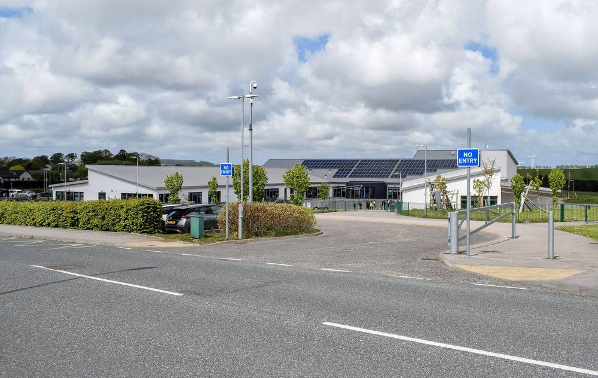

스코틀랜드 주민 70%가 공공건물·신축 주택 태양광 확대 찬성, 반대는 6%…집 근처 태양광 단지도 찬성 43%로 반대의 두 배

솔라에너지스코틀랜드 의뢰 여론조사, 하고 싶어도 못 단다는 응답 38%…스코틀랜드 정부는 공동체 재생에너지 지원 1,500만 파운드로 늘려
스코틀랜드 주민 10명 가운데 7명이 학교 같은 공공건물과 새로 짓는 주택에 태양광을 다는 데 찬성한다는 여론조사 결과가 나왔다. 업계 단체 솔라에너지스코틀랜드가 여론조사기관 모어인커먼에 맡긴 이번 조사에서 공공건물·신축 주택 태양광 확대에 찬성한 응답은 70%, 반대는 6%였고, 내년 3월 잉글랜드·웨일스에서 시행되는 것처럼 신축 주택에 태양광을 의무로 달게 하자는 데도 59%가 동의했다. 집 근처에 태양광 단지가 들어서는 데 찬성한다는 응답은 43%로 반대 22%의 두 배 가까이 됐고, 자기 집에 태양광을 달고 싶지만 그럴 수 없을 것 같다는 응답도 38%였다. 스티븐 게신스 스코틀랜드 에너지 장관은 공동체·재생에너지 지원 제도(CARES) 예산을 올해 1,500만 파운드로 늘렸고, 지난해 연료 빈곤 가구 약 2,000곳에 정부 예산으로 지붕 태양광을 달았다고 밝혔다. 세계자연기금(WWF) 스코틀랜드는 학교와 체육시설 등 공공건물 지붕을 발전에 활용하라고 정부와 지자체에 요구했다.
시민에너지 관점
주민 43%가 집 근처 태양광 단지를 받아들이겠다고 답한 것은 재생에너지 반대 여론이 흔히 생각하는 만큼 크지 않다는 증거다. 그러나 38%가 하고 싶어도 못 한다고 답했듯, 비용과 집 구조의 벽을 개인에게만 맡겨서는 보급이 더디다. 학교·체육관·주차장 같은 공공 지붕을 주민 출자 협동조합에 열어 주면 지붕이 없는 세입자와 저소득층도 발전소의 주인이 될 수 있다. 우리 지자체도 태양광을 올릴 수 있는 공공건물 지붕 목록부터 공개하고 시민 출자 발전소에 우선 빌려줘야 한다.
출처: Yahoo News UK 2026-11-10 Hannah Brown 원문 보기
スコットランド住民の70％が公共施設・新築住宅への太陽光拡大に賛成、反対は6％…自宅近くの太陽光発電所も賛成43％で反対の2倍
ソーラー・エナジー・スコットランド委託の世論調査、設置したくてもできないとの回答38％…スコットランド政府は地域再エネ支援を1,500万ポンドに増額
スコットランド住民の10人に7人が、学校などの公共施設や新築住宅に太陽光パネルを設置することに賛成しているとの世論調査結果が出た。業界団体ソーラー・エナジー・スコットランドが調査会社モア・イン・コモンに委託した今回の調査では、公共施設と新築住宅での太陽光拡大への賛成が70％、反対が6％で、来年3月にイングランドとウェールズで導入されるのと同様に新築住宅への太陽光設置を義務づけることにも59％が同意した。自宅の近くに太陽光発電所ができることに賛成との回答は43％で、反対22％の2倍近くに上り、自宅に太陽光を付けたいが実現できそうにないとの回答も38％あった。スコットランド政府のスティーブン・ゲシンズ・エネルギー相は、地域・再エネ支援制度（CARES）の予算を今年1,500万ポンドに増やし、昨年は燃料貧困世帯約2,000戸に政府資金で屋根置き太陽光を設置したと明らかにした。世界自然保護基金（WWF）スコットランドは、学校や体育施設など公共施設の屋根を発電に活用するよう政府と自治体に求めた。
市民エネルギーの視点
住民の43％が自宅近くの太陽光発電所を受け入れると答えたことは、再エネへの反対が一般に思われているほど大きくないことの証拠だ。しかし38％がしたくてもできないと答えたように、費用や住宅構造の壁を個人だけに任せていては普及は遅れる。学校や体育館、駐車場といった公共の屋根を住民出資の協同組合に開けば、屋根を持たない賃借人や低所得層も発電所の持ち主になれる。韓国の自治体も、太陽光を載せられる公共施設の屋根の一覧をまず公開し、市民出資の発電所に優先して貸し出すべきだ。
出典: Yahoo News UK 2026-11-10 Hannah Brown 原文を読む
苏格兰70%居民支持在公共建筑和新建住宅扩大安装光伏，反对仅6%…家附近建光伏电站的支持率43%，是反对的两倍
苏格兰太阳能协会委托民调显示38%想装却装不了…苏格兰政府将社区可再生能源支持预算增至1,500万英镑
一项民调显示，每10名苏格兰居民中有7人赞成在学校等公共建筑和新建住宅上安装太阳能板。这项由行业团体苏格兰太阳能协会（Solar Energy Scotland）委托民调机构More in Common进行的调查显示，支持在公共建筑和新建住宅扩大光伏的占70%，反对的占6%；59%的人赞同像英格兰和威尔士明年3月起实施的那样，强制新建住宅安装光伏。支持在自家附近建设光伏电站的占43%，接近反对者（22%）的两倍；另有38%的人表示想在自家装光伏，但认为自己做不到。苏格兰能源部长斯蒂芬·格辛斯表示，社区与可再生能源支持计划（CARES）今年预算已增至1,500万英镑，去年政府出资为约2,000户燃料贫困家庭安装了屋顶光伏。世界自然基金会（WWF）苏格兰分会则呼吁政府和地方当局把学校、体育设施等公共建筑屋顶用于发电。
市民能源视角
43%的居民表示愿意接受家附近的光伏电站，说明反对可再生能源的声音并不像通常想象的那么大。但正如38%的人想装却装不了所显示的，把成本和房屋结构的门槛只留给个人，普及就会缓慢。如果把学校、体育馆、停车场等公共屋顶向居民出资的合作社开放，没有屋顶的租户和低收入群体也能成为电站的主人。韩国地方政府也应先公开可安装光伏的公共建筑屋顶清单，并优先租给市民出资电站。
来源: Yahoo News UK 2026-11-10 Hannah Brown 查看原文
70% of Scots Back More Solar on Public Buildings and New Homes, Only 6% Opposed; Support for a Solar Farm Nearby, at 43%, Is Double the Opposition
Poll for Solar Energy Scotland finds 38% want panels but think they cannot have them; Scottish Government has raised community renewables support to £15 million
Seven in 10 people in Scotland support putting solar panels on public buildings such as schools and on new homes, according to a new poll. In the survey, carried out by More in Common for the industry body Solar Energy Scotland, 70% backed expanding solar on public buildings and new homes while 6% were opposed, and 59% supported requiring solar on new-build homes, in line with rules coming into force in England and Wales next March. Some 43% said they would support a solar farm being built near their home, close to double the 22% against, and 38% said they would like panels on their own home but do not think they could have them. Scotland's energy minister Stephen Gethins said the Community and Renewable Energy Scheme (CARES) budget has been increased to £15 million this year and that around 2,000 fuel-poor households received government-funded rooftop solar last year. WWF Scotland called on the Scottish Government and councils to put the roofs of schools, leisure centres and other public buildings to work generating electricity.
Citizen Energy View
That 43% of people would accept a solar farm near their home shows opposition to renewables is smaller than often assumed. But as the 38% who want solar yet cannot have it show, leaving the hurdles of cost and housing type to individuals slows deployment. Opening public roofs on schools, sports halls and car parks to resident-funded cooperatives would let renters and low-income households without a roof of their own become power-plant owners. Korean local governments, too, should start by publishing a list of public roofs suitable for solar and lease them first to citizen-funded power plants.
Source: Yahoo News UK 2026-11-10 Hannah Brown Read the original